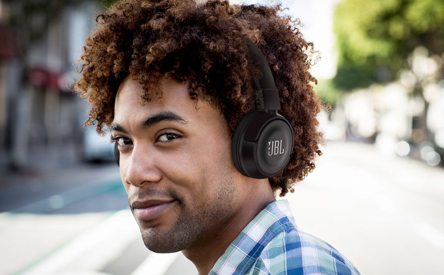

L'inform
JBL T450 BT Noir
Réf JBL : T450-INT-BT-NOIR
Casque nomade - Supra-aural - Bluetooth -Télécommande tactile - Microphone intégré
JBL T450 BT Noir
JBL
Garantie légale de conformité : 2 ans
JBL T450 BT Noir
Son JBL Pure Bass
Depuis plus de 60 ans, JBL conçoit le son précis et impressionnant des grands espaces scéniques du monde entier. Ces écouteurs reproduisent ce même son JBL, en propulsant des graves profonds et puissants.

Gros niveau de graves puissant. Sans fil pour vous retenir
Voici le casque supra-aural sans fil JBL T450BT. Il se replie à plat, est léger, confortable et compact. Sous le capot, une paire de haut-parleur graves de 32 mm propulsent des graves de choc, en reproduisant le puissant son Pure Bass de JBL que vous connaissez dans des lieux bien plus grands. Les commandes de la musiques de la musique et des appels ainsi que le microphone sont sur l'écouteur. Et parce que votre musique doit vous suivre partout, vous obtiendrez jusqu'à 11 heures d'écoute audio ininterrompue sur une seule charge.
Caractéristique techniques
| Caractéristiques |
Moteur dynamique : 32 mm
Réponse en fréquence : 20 Hz – 20 kHz
Impédance : 16 ohms
Spécification Bluetooth : 4.1
Autonomie : 11 heures
|
| Poids |
320 grammes |
| Livré avec |
1 casque T450BT
Câble de recharge
Carte de mise en garde
Carte de garantie
Fiche de sécurité QSG
|